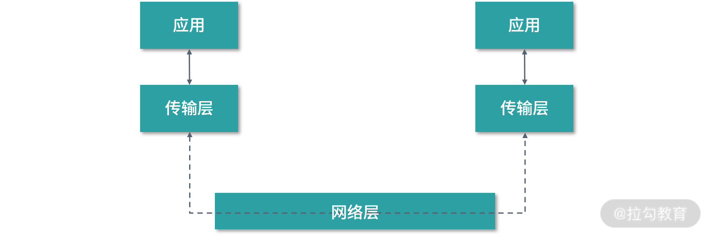
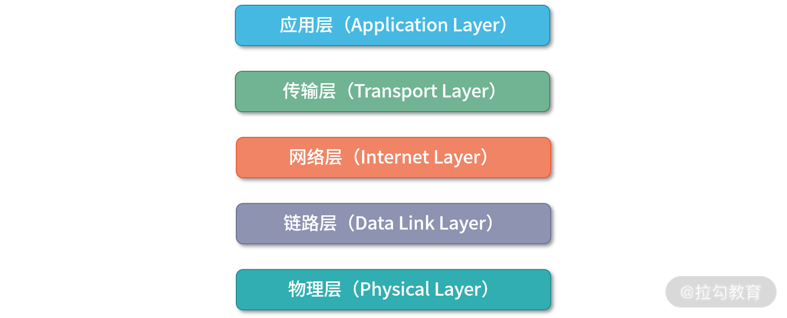

- 00 开篇词 为什么大厂面试必考操作系统？.md.html
- 00 课前必读 构建知识体系，可以这样做！.md.html
- 01 计算机是什么：“如何把程序写好”这个问题是可计算的吗？.md.html
- 02 程序的执行：相比 32 位，64 位的优势是什么？（上）.md.html
- 03 程序的执行：相比 32 位，64 位的优势是什么？（下）.md.html
- 04 构造复杂的程序：将一个递归函数转成非递归函数的通用方法.md.html
- 05 存储器分级：L1 Cache 比内存和 SSD 快多少倍？.md.html
- 05 (1) 加餐 练习题详解（一）.md.html
- 06 目录结构和文件管理指令：rm -rf 指令的作用是？.md.html
- 07 进程、重定向和管道指令：xargs 指令的作用是？.md.html
- 08 用户和权限管理指令： 请简述 Linux 权限划分的原则？.md.html
- 09 Linux 中的网络指令：如何查看一个域名有哪些 NS 记录？.md.html
- 10 软件的安装： 编译安装和包管理器安装有什么优势和劣势？.md.html
- 11 高级技巧之日志分析：利用 Linux 指令分析 Web 日志.md.html
- 12 高级技巧之集群部署：利用 Linux 指令同时在多台机器部署程序.md.html
- 12 (1)加餐 练习题详解（二）.md.html
- 13 操作系统内核：Linux 内核和 Windows 内核有什么区别？.md.html
- 14 用户态和内核态：用户态线程和内核态线程有什么区别？.md.html
- 15 中断和中断向量：Javajs 等语言为什么可以捕获到键盘输入？.md.html
- 16 WinMacUnixLinux 的区别和联系：为什么 Debian 漏洞排名第一还这么多人用？.md.html
- 16 (1)加餐 练习题详解（三）.md.html
- 17 进程和线程：进程的开销比线程大在了哪里？.md.html
- 18 锁、信号量和分布式锁：如何控制同一时间只有 2 个线程运行？.md.html
- 19 乐观锁、区块链：除了上锁还有哪些并发控制方法？.md.html
- 20 线程的调度：线程调度都有哪些方法？.md.html
- 21 哲学家就餐问题：什么情况下会触发饥饿和死锁？.md.html
- 22 进程间通信： 进程间通信都有哪些方法？.md.html
- 23 分析服务的特性：我的服务应该开多少个进程、多少个线程？.md.html
- 23 (1)加餐 练习题详解（四）.md.html
- 24 虚拟内存 ：一个程序最多能使用多少内存？.md.html
- 25 内存管理单元： 什么情况下使用大内存分页？.md.html
- 26 缓存置换算法： LRU 用什么数据结构实现更合理？.md.html
- 27 内存回收上篇：如何解决内存的循环引用问题？.md.html
- 28 内存回收下篇：三色标记-清除算法是怎么回事？.md.html
- 28 (1)加餐 练习题详解（五）.md.html
- 29 Linux 下的各个目录有什么作用？.md.html
- 30 文件系统的底层实现：FAT、NTFS 和 Ext3 有什么区别？.md.html
- 31 数据库文件系统实例：MySQL 中 B 树和 B+ 树有什么区别？.md.html
- 32 HDFS 介绍：分布式文件系统是怎么回事？.md.html
- 32 (1)加餐 练习题详解（六）.md.html
- 33 互联网协议群（TCPIP）：多路复用是怎么回事？.md.html
- 34 UDP 协议：UDP 和 TCP 相比快在哪里？.md.html
- 35 Linux 的 IO 模式：selectpollepoll 有什么区别？.md.html
- 36 公私钥体系和网络安全：什么是中间人攻击？.md.html
- 36 (1)加餐 练习题详解（七）.md.html
- 37 虚拟化技术介绍：VMware 和 Docker 的区别？.md.html
- 38 容器编排技术：如何利用 K8s 和 Docker Swarm 管理微服务？.md.html
- 39 Linux 架构优秀在哪里.md.html
- 40 商业操作系统：电商操作系统是不是一个噱头？.md.html
- 40 (1)加餐 练习题详解（八）.md.html
- 41 结束语 论程序员的发展——信仰、选择和博弈.md.html
- 捐赠
33 互联网协议群（TCPIP）：多路复用是怎么回事？
这一讲我们开始学习《计算机网络》相关的知识。你可以把《计算机组成原理》《操作系统》和《计算机网络》看作补充计算机基础知识的 3 门必修课程。
- 《计算机组成原理》讲述的是如何去理解程序和计算。
- 《操作系统》讲述的是如何去理解和架构应用程序。
- 《计算机网络》讲述的是如何去理解今天的互联网。
本模块讲解的计网知识，以科普为主，我会用通俗的比喻、简单明了的语言，帮你在短时间内构建起网络的基本概念。如果要深入学习计算机网络的原理、算法，可以关注我即将在拉勾教育推出的《计算机网络》专栏。
现在来看，“计算机网络”也许是一个过时的词汇，它讲的是怎么用计算实现通信。今天我们已经发展到了一个互联网、物联网的时代，社交网络、云的时代，再来看网络，意义已经发生转变。但这里面还是有很多经典的知识依旧在传承。比如说 TCP/IP 协议，问世后就逐渐成为占有统治地位的通信协议。虽然后面诞生出了许许多多的协议，但是我们仍然习惯性地把整个互联网的架构称为 TCP/IP 协议群，也叫作互联网协议群（Internet Protocol Suit）。
协议的分层
对于多数的应用和用户而言，使用互联网的一个基本要求就是数据可以无损地到达。用户通过应用进行网络通信，应用启动之后就变成了进程。因此，所有网络通信的本质目标就是进程间通信。世界上有很多进程需要通信，我们要找到一种通用的，每个进程都能认可和接受的通信方式，这就是协议。
应用层
从分层架构上看，应用工作在应用层（Application Layer）。应用的功能，都在应用层实现。所以应用层很好理解，说的就是应用本身。当两个应用需要通信的时候，应用（进程中的线程）就调用传输层进行通信。从架构上说，应用层只专注于为用户提供价值即可，没有必要思考数据如何传输。而且应用的开发商和传输库的提供方也不是一个团队。
传输层
为应用层提供网络支持的，就是传输层（Transport Layer）。
传输层控制协议（Transmission Control Protocol）是目前世界上应用最广泛的传输层协议。传输层为应用提供通信能力。比如浏览器想访问服务器，浏览器程序就会调用传输层程序；Web 服务接收浏览器的请求，Web 服务程序就会调用传输层程序接收数据。
考虑到应用需要传输的数据可能会非常大，直接传输不好控制。传输层需要将数据切块，即使一个分块传丢了、损坏了，可以重新发一个分块，而不用重新发送整体。在 TCP 协议中，我们把每个分块称为一个 TCP 段（TCP Segment）。

传输层负责帮助应用传输数据给应用。考虑到一台主机上可能有很多个应用在传输数据，而一台服务器上可能有很多个应用在接收数据。因此，我们需要一个编号将应用区分开。这个编号就是端口号。比如 80 端口通常是 Web 服务器在使用；22 端口通常是远程登录服务在使用。而桌面浏览器，可能每个打开的标签栏都是一个独立的进程，每个标签栏都会使用临时分配的端口号。TCP 封包（TCP Segment）上携带了端口号，接收方可以识别出封包发送给哪个应用。
网络层
接下来你要思考的问题是：传输层到底负不负责将数据从一个设备传输到另一个设备（主机到主机，Host To Host）。仔细思考这个过程，你会发现如果这样设计，传输层就会违反简单、高效、专注的设计原则。
我们从一个主机到另一个主机传输数据的网络环境是非常复杂的。中间会通过各种各样的线路，有形形色色的交叉路口——有各式各样的路径和节点需要选择。核心的设计原则是，我们不希望一层协议处理太多的问题。传输层作为应用间数据传输的媒介，服务好应用即可。对应用层而言，传输层帮助实现应用到应用的通信。而实际的传输功能交给传输层的下一层，也就是网络层（Internet Layer） 会更好一些。

IP 协议（Internet Protocol）是目前起到统治地位的网络层协议。IP 协议会将传输层的封包再次切分，得到 IP 封包。网络层负责实际将数据从一台主机传输到另一台主机（Host To Host），因此网络层需要区分主机的编号。
在互联网上，我们用 IP 地址给主机进行编号。例如 IPv4 协议，将地址总共分成了四段，每段是 8 位，加起来是 32 位。寻找地址的过程类似我们从国家、城市、省份一直找到区县。当然还有特例，比如有的城市是直辖市，有的省份是一个特别行政区。而且国与国体制还不同，像美国这样的国家，一个州其实可以相当于一个国家。
IP 协议里也有这个问题，类似行政区域划分，IP 协议中具体如何划分子网，需要配合子网掩码才能够明确。每一级网络都需要一个子网掩码，来定义网络子网的性质，相当于告诉物流公司到这一级网络该如何寻找目标地址，也就是寻址（Addressing）。关于更多子网掩码如何工作，及更多原理类的知识我会在拉勾教育的《计算机网络》专栏中和你分享。
除了寻址（Addressing），IP 协议还有一个非常重要的能力就是路由。在实际传输过程当中，数据并不是从主机直接就传输到了主机。而是会经过网关、基站、防火墙、路由器、交换机、代理服务器等众多的设备。而网络的路径，也称作链路，和现实生活中道路非常相似，会有岔路口、转盘、高速路、立交桥等。
因此，当封包到达一个节点，需要通过算法决定下一步走哪条路径。我们在现实生活中经常会碰到多条路径都可以到达同一个目的地的情况，在网络中也是如此。总结一下。寻址告诉我们去往下一个目的地该朝哪个方向走，路由则是根据下一个目的地选择路径。寻址更像在导航，路由更像在操作方向盘。
数据链路层（Data Link Layer）
考虑到现实的情况，网络并不是一个完整的统一体。比如一个基站覆盖的周边就会形成一个网络。一个家庭的所有设备，一个公司的所有设备也会形成一个网络。所以在现实的情况中，数据在网络中设备间或者跨网络进行传输。而数据一旦需要跨网络传输，就需要有一个设备同时在两个网络当中。通过路由，我们知道了下一个要去的 IP 地址，可是当前的网络中哪个设备对应这个 IP 地址呢？
为了解决这个问题，我们需要有一个专门的层去识别网络中的设备，让数据在一个链路（网络中的路径）中传递，这就是数据链路层（Data Link Layer）。数据链路层为网络层提供链路级别传输的支持。
物理层
当数据在实际的设备间传递时，可能会用电线、电缆、光纤、卫星、无线等各种通信手段。因此，还需要一层将光电信号、设备差异封装起来，为数据链路层提供二进制传输的服务。这就是物理层（Physical Layer）。
因此，从下图中你可以看到，由上到下，互联网协议可以分成五层，分别是应用层、传输层、网络层、数据链路层和物理层。

多路复用
在上述的分层模型当中，一台机器上的应用可以有很多。但是实际的出口设备，比如说网卡、网线通常只有一份。因此这里需要用到一个叫作多路复用（Multiplex）的技术。多路复用，就是多个信号，复用一个信道。
传输层多路复用
对应用而言，应用层抽象应用之间通信的模型——比如说请求返回模型。一个应用可能会同时向服务器发送多个请求。因为建立一个连接也是需要开销的，所以可以多个请求复用一个 TCP 连接。复用连接一方面可以节省流量，另一方面能够降低延迟。如果应用串行地向服务端发送请求，那么假设第一个请求体积较大，或者第一个请求发生了故障，就会阻塞后面的请求。
而使用多路复用技术，如下图所示，多个请求相当于并行的发送请求。即使其中某个请求发生故障，也不会阻塞其他请求。从这个角度看，多路复用实际上是一种 Non-Blocking（非阻塞）的技术。我们再来看下面这张图，不同的请求被传输层切片，我用不同的颜色区分出来，如果其中一个数据段（TCP Segment）发生异常，只影响其中一个颜色的请求，其他请求仍然可以到达服务。
网络层多路复用
传输层是一个虚拟的概念，但是网络层是实实在在的。两个应用之间的传输，可以建立无穷多个传输层连接，前提是你的资源足够。但是两个应用之间的线路、设备，需要跨越的网络往往是固定的。在我们的互联网上，每时每刻都有大量的应用在互发消息。而这些应用要复用同样的基础建设——网线、路由器、网关、基站等。
网络层没有连接这个概念。你可以把网络层理解成是一个巨大的物流公司。不断从传输层接收数据，然后进行打包，每一个包是一个 IP 封包。然后这个物流公司，负责 IP 封包的收发。所以，是很多很多的传输层在共用底下同一个网络层，这就是网络层的多路复用。
总结一下。应用层的多路复用，如多个请求使用同一个信道并行的传输，实际上是传输层提供的多路复用能力。传输层的多路复用，比如多个 TCP 连接复用一条线路，实际上是网络层在提供多路复用能力。你可以把网络层想象成一个不断收发包裹的机器，在网络层中并没有连接这个概念，所以网络层天然就是支持多路复用的。
多路复用的意义
在工作当中，我们经常会使用到多路复用的能力。多路复用让多个信号（例如：请求/返回等）共用一个信道（例如：一个 TCP 连接），那么在这个信道上，信息密度就会增加。在密度增加的同时，通过并行发送信号的方式，可以减少阻塞。比如说应用层的 HTTP 协议，浏览器打开的时候就会往服务器发送很多个请求，多个请求混合在一起，复用相同连接，数据紧密且互相隔离（不互相阻塞）。同理，服务之间的远程调用、消息队列，这些也经常需要多路复用。
总结
那么通过这一讲的学习，你现在可以尝试来回答本节关联的面试题目：多路复用是怎么回事？
【解析】多路复用让多个信号（例如：请求/返回等）共用一个信道（例如：一个 TCP 连接）。它有两个明显的优势。
- 提升吞吐量。多一个信号被紧密编排在一起（例如：TCP 多路复用节省了多次连接的数据），这样网络不容易空载。
- 多个信号间隔离。信号间并行传输，并且隔离，不会互相影响。
© 2019 - 2023 Liangliang Lee. Powered by gin and hexo-theme-book.